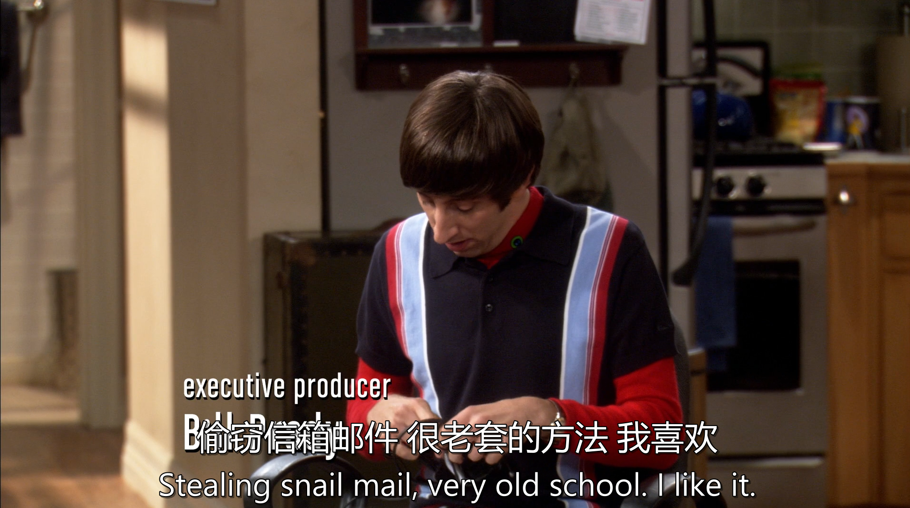
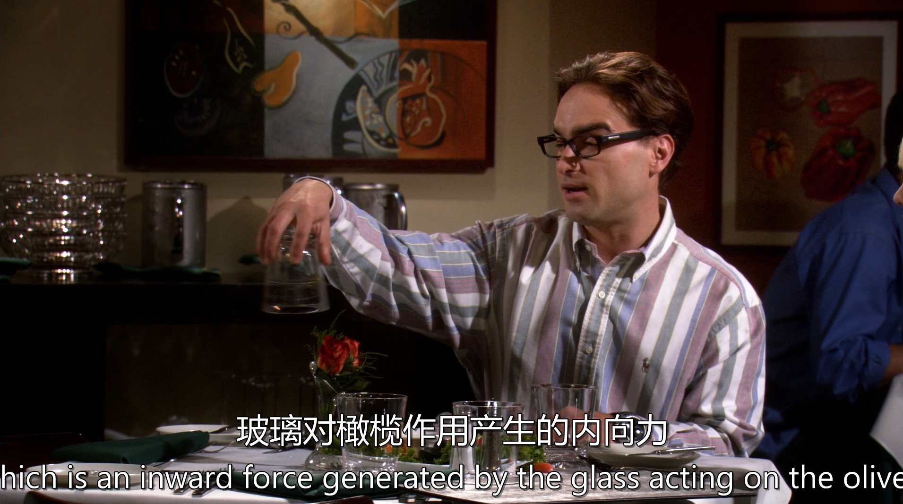

生词
unsheathe 拔出
spice 调味
mead 蜜酒
flank 侧面；侧翼
smouldering 阴燃
句子
原文： "Blowing the gates." 翻译： “炸开闸门” / “破门而入” （根据语境也可译为：“冲破防线”、“大开方便之门”）
文化背景解析 字面意思
Blowing：指用爆炸物（如炸药）强行破坏，军事/犯罪场景常用。
Gates：广义指“门/闸门”，可引申为“关卡”、“限制”。
直译组合：通过暴力或技术手段突破物理封锁。
引申含义
军事行动：突击队爆破入口（如《使命召唤》游戏场景）。
黑客攻击：破解系统防火墙（"They’re blowing the gates of the server."）。
体育竞技：强势突破防守（如橄榄球战术）。
社会隐喻：打破规则束缚（"The protest blew the gates of censorship."）。
"Slash and move." 翻译： “砍完就撤” / “劈砍转移” （战术语境下：“打了就跑”；园艺场景：“剪枝后挪位”）
文化背景解析 字面含义
Slash：用利器（刀、剑等）劈砍，或象征性快速破坏。
Move：立即移动位置，避免被反击或滞留风险。
组合效果：“快速攻击后迅速脱离”的战术思维。
游戏指挥：
"Slash and move! Don’t let the boss agro you!" （“砍完闪人！别拉BOSS仇恨！”）
职场比喻：
"Startup survival rule: Slash burn rate and move to monetization fast." （“创业生存法则：狂砍开支，快搞钱。”）
丧尸末日：
"Slash the zombie’s neck and move—they swarm fast!" （“砍脖子速溜——尸群聚得快！”）

"Stay in formation." 翻译： “保持队形！” / “别乱阵型！” （战术语境下：“维持编队”；日常场景：“别掉队”）
文化背景解析 军事/战术含义
Formation（队形）：指军队、战机、舰队等按特定策略排列的阵型（如楔形、方阵）。
关键用途：
防御（如罗马盾墙）
火力集中（如战机编队轰炸）
迷惑敌人（如骑兵迂回阵）

"On your tail"：直译为“在你尾巴上”，实际指紧追不舍的追踪者（如敌人、警察、竞争对手）。
类似中文的“咬住不放”或“尾随”，但更动态化。
使用场景
空战/赛车：
"Bandit at 6 o'clock! You got one on your tail!" （“敌机在你正后方！咬住你了！”）
动作片/逃亡：
"Don’t look back, but you’ve got a cop on your tail." （“别回头，有条子盯上你了。”）
职场竞争（幽默）：
"The new intern is hustling—you got one on your tail for that promotion!" （“新来的实习生很拼啊，你升职路上有对手了！”）
"My tail's prehensile, I'll swat him off." 翻译： “我的尾巴可是能抓握的，看我不把他甩飞！” （或更俏皮：“咱这尾巴灵活得很，一抽一个准儿~”）
文化背景解析 "Prehensile tail"（可抓握的尾巴）
生物学概念：指某些动物（如猴子、食蚁兽）能像手一样缠绕物体的尾巴。
科幻/奇幻设定：外星人或兽人种族的常见特征（如《阿凡达》的纳美人）。
中文对应：“功能性尾巴”（学术）/“万能尾巴”（中二版）。
"Swat off" 的暴力萌感
Swat：拍打（如打苍蝇），此处带轻松碾压的嚣张语气。
中文类似表达：“一尾巴抽飞”（武侠风）/“用尾巴教他做人”（网文梗）。
"Tonight I spice my mead with goblin blood." 翻译： “今夜，我的蜜酒以哥布林之血调味。” （或更中二：“此杯猩红，当以地精血为引！”）
文化背景解析 "Mead"（蜜酒）
北欧/中世纪传统酒精饮品，蜂蜜发酵制成，维京战士和奇幻文学标志性元素。
中文常译“蜂蜜酒”，但“蜜酒”更保留古风（如《霍比特人》矮人狂饮场景）。
"Goblin blood" 的象征
野蛮征服：哥布林（地精）在奇幻设定中为低等魔物，其血象征对敌人的碾压。
黑暗幽默：如同说“今晚威士忌加敌酋眼泪”，凸显嚣张姿态。
中文对应：“以敌祭酒”（武侠狠话）/“魔血调饮”（网文风）。

"Snail mail." 翻译： “蜗牛邮件” / “龟速邮政” （中文俗称：“平信”、“慢递”）
文化背景解析 词源与讽刺
诞生于1990年代电子邮件普及后，对比“电子邮件”（秒达）和“传统邮政”（数日/周）的速度差异。
用蜗牛（snail）比喻缓慢，带戏谑色彩（类似中文“龟速”）。
使用场景
抱怨邮政： "My passport arrived by snail mail—two weeks late!" （“护照走平信寄到，迟了两周！”）
怀旧营销： "Send love via snail mail for a vintage touch." （“用蜗牛邮件传递爱，复古又走心。”）
法律文件： "The court only accepts snail-mailed applications." （“法院只收纸质邮寄申请。”）

"Civil servants have a documented propensity to snap." 翻译： “公务员有据可查的暴脾气倾向。” （或更口语化：“公务员容易炸毛，这可是有记录的！”）
文化背景解析 "Civil servants"（公务员）的刻板印象
在西方语境中，公务员常被吐槽为：
官僚主义（办事拖沓、死板）
压抑情绪（长期面对公众抱怨，易突然爆发）
中文类似梗：“窗口单位脸难看” / “体制内祖安人”
"Documented propensity"（有据可查的倾向）
用学术腔调侃，暗示“公务员易怒”已是公开现象，甚至可能被研究统计过。
类似中文：“有论文支持”（幽默夸张） / “大数据显示”
"Snap" 的精准含义
不是普通的生气，而是长期压抑后的突然崩溃（像皮筋绷断）。
经典场景：
柜台公务员突然摔文件：“这表你自己填！”
交警对违规司机咆哮：“你驾照是摇号摇来的吗？！”
使用场景举例 同事吐槽：
"Why was the DMV lady yelling?" "Dude, civil servants have a documented propensity to snap." （“为啥车管所大姐在吼？”“老兄，公务员易怒是科学事实。”）
社会新闻评论：
"A clerk threw a printer at a customer. Study confirms: civil servants snap." （“职员用打印机砸顾客。研究证实：公务员会暴走。”）
自嘲：
"I’m a civil servant... my therapist documents my propensity to snap." （“我是公务员……我的心理医生在记录我的炸毛频率。”）

"Penny for your thoughts." 翻译： “能告诉我你在想什么吗？” / “一分钱买你的心事。” （中文俗语：“说说你的心里话？”）
文化背景解析 起源与字面意思
源自16世纪英国，字面意思是“用一分钱买你的想法”，是一种幽默而委婉的询问方式，类似于中文的“买你一句真话”。
最初可能指用硬币换取算命者的预言，后来演变为关心他人心事的表达。
使用场景
关心朋友：对方看起来心事重重时，用这句话温柔询问。
"You’ve been quiet all day—penny for your thoughts?" （“你一整天没说话了，能告诉我你在想什么吗？”）
幽默调侃：对方发呆或走神时，用这句话打趣。
"Penny for your thoughts? Or is it a million-dollar idea?" （“一分钱买你的想法，还是说这是个价值百万的点子？”）
"Kissing? What kind of kissing? Cheeks, lips, chase, French?" 翻译： “接吻？哪种吻？亲脸颊、嘴唇、追逐吻、法式深吻？” （或更口语化：“亲亲？咋亲？贴脸、嘴对嘴、你追我躲、舌吻？”）
文化背景解析 Kissing 的细分类型
Cheeks（脸颊吻）：礼仪性轻吻，常见于欧洲问候（如法国 la bise）。
Lips（唇吻）：浪漫但克制的轻吻，如童话中“真爱之吻”。
Chase kiss（追逐吻）：调皮躲闪的调情吻（一方躲，一方追）。
French kiss（法式吻）：舌吻的代称，因法国人“浪漫”的刻板印象得名。
文化差异
吻类型 西方常见场景 中文对应概念 Cheeks 朋友见面贴面礼 “贴脸亲”/“碰脸” Lips 情侣日常轻吻 “啵一个” Chase 调情/影视剧经典桥段 “躲猫猫亲” French 成人关系亲密行为 “舌吻”/“深吻”

"At least now you can retrieve the black box from the twisted smouldering wreckage that was once your fantasy of dating her, and analyse the data so that you don’t crash into geek mountain again."
翻译： “至少现在，你可以从你那曾经美好的‘追她幻想’的残骸中挖出黑匣子，分析数据，以免再次撞上‘极客山’。” （或更口语化：“至少你能从‘追她梦’的废墟里翻出记录仪，研究下为啥又双叒沦为单身狗。”）
文化背景解析 “Black box”（黑匣子）的隐喻
原指飞机记录事故数据的设备，此处比喻“复盘恋爱失败原因”。
中文类似表达：“吃一堑长一智” / “失败是成功之母”（但更技术宅风）。
“Twisted smouldering wreckage”（扭曲冒烟的残骸）
将破碎的恋爱幻想比作空难现场，强调惨烈程度。
中文对应：“昔日美梦，如今稀碎” / “爱情已死，有事烧纸”。
“Geek mountain”（极客山）
自嘲梗，指因沉迷技术/宅文化（如游戏、动漫、编程）而单身的状态。
中文类似：“注孤生” / “二刺螈の诅咒”。
使用场景举例 朋友毒舌安慰：
A: "She said I care more about Python than her..."
B: "Well, retrieve the black box from your wrecked fantasy and stop coding on dates!" （“她说你爱Python胜过爱她？赶紧从幻想残骸里找黑匣子，下次约会别再写代码了！”）
自嘲文案：
"My love life’s crash site has enough black boxes to open a museum." （“我的情史残骸里的黑匣子能开博物馆了。”）
职场隐喻：
"After this project failed, we need to find its black box—was it the budget or your Excel addiction?" （“项目黄了，得找黑匣子——是预算问题，还是你Excel成瘾？”）
"I don't think you have a shot there." 翻译： “我觉得你没戏。” / “你这波估计要凉。” （或更口语化：“别想了，根本没指望！”）
文化背景解析 "Have a shot" 的潜台词
字面意思：开枪/射击 → 引申为“尝试的机会”。
类似中文的“有戏”或“胜算”，但更强调“可能性极低”。
使用场景
恋爱追求：
A: "I’m gonna ask her out!"
B: "Bro, I don’t think you have a shot." （“兄弟，你追她？算了吧。”）

"I'm a bit of a self-taught expert." 翻译： “我算是自学成才的专家吧。” / “咱这技术，纯属野路子出身。” （或更凡尔赛：“略懂，都是自己瞎琢磨的。”）
文化背景解析 "Self-taught expert" 的潜台词
自豪感：强调不靠正规教育，全靠个人努力。
谦虚包装：用 a bit of（一点点）淡化炫耀感，但实际暗示“我很牛”。
中文类似：“民间大神” / “土法炼钢型高手”。

"Featuring the talents of..." 直译： “由……的才华出演” / “特邀……倾情献艺” 意译： “由……主演” / “领衔主演：……”
文化背景解析 字面拆解
Feature：在影视/音乐领域指“以……为特色”。
Talents：此处指“明星演员/艺人”，而非字面“才能”。
组合效果：委婉表达“大牌参演”，常见于海报、宣传稿。
使用场景
影视宣传： "This film features the talents of Tom Hanks and Meryl Streep." （“本片由汤姆·汉克斯与梅丽尔·斯特里普主演。”）
音乐专辑： "The album features the talents of Jay-Z and Beyoncé." （“专辑特邀Jay-Z和碧昂丝献声。”）
讽刺调侃： "The school play features the ‘talents’ of my tone-deaf nephew." （“校剧‘特邀’我五音不全的侄子‘献艺’。”）

"On the plus side..." 翻译： “往好处想……” / “换个角度也有优点……” （或更口语化：“好歹……” / “退一万步说……”）
文化背景解析 核心功能
用于平衡负面情境，在坏事中找出积极因素。
类似中文的“不幸中的万幸”，但更轻松随意。
使用场景
负面情境 On the plus side... 的积极转折 中文对应 "My flight was canceled." "On the plus side, I got hotel vouchers!" “航班取消，但白嫖了酒店。” "I failed the exam." "On the plus side, now I know what to study." “挂科了，至少知道该复习啥。” "My date ghosted me." "On the plus side, I saved $200 on dinner." “被放鸽子，省了顿饭钱。”
直接反义短语 英文 中文翻译 使用场景 "On the downside..." “缺点是……” 客观列举弊端（中性语气） "On the minus side..." “不利的是……” 正式报告/数据分析 "The bad news is..." “坏消息是……” 幽默或戏剧性转折
"Would I be bound by Asimov's Three Laws of Robotics?" 翻译： “我需要遵守阿西莫夫的机器人三定律吗？”
"Be bound" 翻译： “受约束” / “必须遵守” （根据语境可译为：“受限于”、“注定”、“绑定”）
文化背景解析 核心含义
法律/规则：指被条款、合同或道德准则强制约束。
"The contract binds us to secrecy." （“合同要求我们必须保密。”）
物理/技术：指被物理性捆绑或系统强制限制。
"The data is bound to the server." （“数据被绑定在服务器上。”）
命运/必然性：表达不可避免的结果。
"He was bound to fail." （“他注定失败。”）
"You're in for a treat." 翻译： “你有好戏看了！” / “你要走运了！” （或更口语化：“准备好惊喜吧！” / “你要乐开花啦！”）
文化背景解析 核心含义
积极惊喜：暗示对方即将体验超预期的好事（如美食、表演、礼物）。
幽默悬念：可能伴随恶作剧（如“惊喜”变“惊吓”）。
使用场景
情境 英文例句 中文地道说法 美食推荐 "Try this cake—you’re in for a treat!" “尝尝这蛋糕，包你叫绝！” 演出预告 "Wait till you see the magic trick. You’re in for a treat!" “接下来这个魔术，让你大开眼界！” 反语调侃 "Mom’s making ‘special’ pancakes... you’re in for a treat." “老妈要做‘秘制’煎饼…你自求多福吧。” 中文对应表达
正能量版：“你有口福/眼福了！”
悬念版：“接下来，见证奇迹的时刻！”
阴阳怪气版：“嘿嘿，你等着‘惊喜’吧~”
"Take into account" 的潜台词
正式场景：医生/教练表示已调整方案（如减少剧烈运动）。
"Your training plan takes your asthma into account." （“你的训练计划已考虑哮喘因素。”）
日常关怀：朋友提醒避免过敏原（如“聚会没买花生”）。
讽刺用法：对方拿哮喘当借口时翻旧账（"Oh, I ‘took it into account’ when you skipped chores!"）。

Did we say a time?" 翻译： “我们约时间了吗？” / “具体几点来着？” （或更口语化：“咱说好几点碰头没？”）
文化背景解析 核心含义
确认是否已约定具体时间，常见于：
健忘：真忘了（尤其英语母语者常用 "Did we..." 代替 "Have we..."）。
委婉催促：暗示对方该定时间了（如“您倒是说个点儿啊！”）。

"For that dense molecular cloud of Aramis to dissipate." 翻译： “要让阿拉米斯那团浓密的分子云散开。” （或更文艺：“待阿拉米斯之浊云消散。”）
文化背景解析 科学隐喻
分子云（Molecular Cloud）：天文学中恒星诞生的混沌区域，此处比喻 “阿拉米斯（Aramis）的混乱/固执/不透明状态”。
Dissipate（消散）：暗示需要时间或外力干预才能理清问题。

"If it should ever come up..." 翻译： “万一有人提起……” / “如果这事被翻出来……” （或更口语化：“要是哪天有人问起……”）
文化背景解析 核心含义
预防性铺垫：为敏感/尴尬话题提前准备回应。
低概率事件：暗示问题可能永远不会被提及（但得防一手）。
使用场景
情境 英文 中文地道说法 职场甩锅 "If it should ever come up, say the data was ‘lost in transit’." “万一领导问，就说数据‘传输丢失
"This kicks off a rather unpleasant six months." 翻译： “接下来这六个月会相当难熬。” / “这就开启了痛苦的半年时光。” （或更口语化：“好日子到头了，准备熬半年吧！”）
文化背景解析 "Kicks off" 的动态感
原指足球开球，引申为“不情愿地启动某事”，暗含“被迫卷入”的无奈。
中文类似：“拉开序幕”（中性） / “噩梦开始”（消极）。
医疗情境：
"The doctor said recovery takes six months... this kicks off a rather unpleasant journey." （“医生说要恢复半年…苦日子开始了。”）
职场吐槽：
"New CEO announced ‘efficiency reforms’—yep, this kicks off six months of hell." （“新CEO要‘改革’——得，接下来半年别想好过。”）
末日预言：
"The asteroid’s six months out... and so is my will to live." （“小行星半年后撞地球…我的求生欲也差不多到期了。”）
"This thing is going the distance." 翻译： “这事要死磕到底了。” / “这场较量会持续到最后。” （或更口语化：“不分胜负不罢休！”）
文化背景解析 "Going the distance" 的起源
源自拳击术语，指“打满全场回合”（通常12回合），引申为坚持到极限。
中文类似：“血战到底” / “拼到弹尽粮绝”。
"I'll just tell her that you had a routine colonoscopy and haven't quite bounced back." 翻译： “我就跟她说你刚做完常规肠镜，还没完全恢复。” （或更口语化：“我就说你肠镜检查完，人还虚着呢~”）
文化背景解析 "Routine colonoscopy"（常规肠镜）
欧美50岁以上人群常规体检项目，中文俗称“肠胃镜”。
常被用作请假/逃避社交的万能借口（因涉及隐私，少有人追问细节）。
"Haven't quite bounced back"
字面：未完全恢复（bounce back 像球弹回，喻指恢复活力）。
潜台词：
真不适：检查后可能腹胀、乏力。
假不适：委婉拒绝的借口（如不想参加团建）。
场景 英文 中文地道说法 真实医疗 "The sedation takes 24 hours to wear off." “麻醉药效得一天才退。” 职场糊弄 "Just say you’re ‘recovering’—no one asks follow-ups." “说‘调养中’，没人敢细问！” 家庭谎言 "Mom, colonoscopy is code for ‘hangover’." “妈，‘肠镜’就是‘宿醉’的暗号。”
"We do have a chocolate key lime that’s moving pretty well." 翻译： “我们确实有一款巧克力青柠派，卖得挺火。” （或更口语化：“巧克力青柠味儿的，现在走量贼快！”）
文化背景解析 "Key lime"（青柠派）
美国经典甜点，用佛罗里达青柠（Key lime）制作，通常配奶油或巧克力。
中文常直译为“青柠派”，但需加说明（因国内较少见）。
"Moving pretty well"
商业行话，指“销量不错”（= selling fast）。
类似中文：“走量快” / “卖爆了” / “畅销款”。

A: "Centrifugal（/senˈtrɪfjəɡl/） force!"
B: "Actually, it’s centripetal（/senˈtrɪpɪtl/） force, which is an inward force generated by the glass acting on the olive."